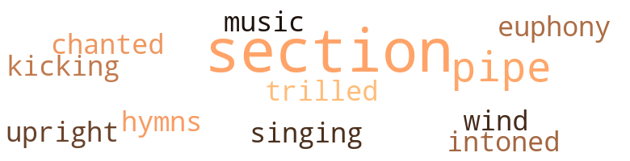
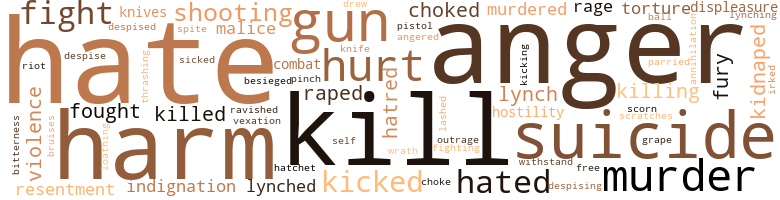
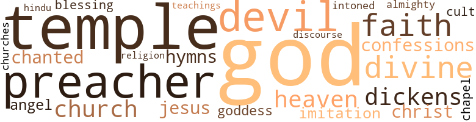

Band Will Not Play Dixie (The), by Brown, Theodore (1955)
21 music-related terms matched in this text.
Most frequent terms in this topic: section (8); pipe (3); euphony (1); kicking (1); trilled (1)
hymn.n.01
Definition: a song of praise (to God or to a saint or to a nation)
| word | sentence |
|---|---|
| hymns | She finished in the kitchen , then moved to another part of the house , within sound distance , for I could hear her singing snatches of Baptist hymns in a queasy , soft-pitched soprano voice , the while I sat at the table and chain-smoked cigarettes and waited for Wardie . |
kick.v.04
Definition: kick a leg up
| word | sentence |
|---|---|
| kicking | Suddenly , as though he had gone crazy , the Senator tore into me , screaming obscenities and kicking and hacking me with his fists . |
music.n.01
Definition: an artistic form of auditory communication incorporating instrumental or vocal tones in a structured and continuous manner
| word | sentence |
|---|---|
| music | You like books and good music and good shows , things the average person could n't appreciate . |
music.n.02
Definition: any agreeable (pleasing and harmonious) sounds
| word | sentence |
|---|---|
| euphony | " Maoina - Maoina - Maoina , " I repeated orally , testing the euphony of the new word . |
pipe.n.04
Definition: a tubular wind instrument
| word | sentence |
|---|---|
| pipe | He knocked the ashes from his pipe into the wastebasket , then burrowed the bowl inside his tobacco pouch . |
| pipe | He prefers that ole stinky pipe to a good cigar ... . |
| pipe | Then , before resuming , he paused and relighted his pipe . |
section.n.01
Definition: a self-contained part of a larger composition (written or musical)
| word | sentence |
|---|---|
| section | Then we came to a section where the homes were bigger and farther apart from each other and with - drawn for reasons of privacy and distinction from the street . |
| section | That whole nigger section in Atlanta ' bout burned to the ground . |
| section | Getting off the bus before it made a detour to bypass the Negro section , my vague recollection of this section could not help me decide where it was that I wanted to go . |
| section | Getting off the bus before it made a detour to bypass the Negro section , my vague recollection of this section could not help me decide where it was that I wanted to go . |
| section | Beyond that , as far as I was able to see , the whole of what I remembered as the colored section of the city was a mass of wreckage and smoke , as if it had served as a target for an air blitz . |
| section | The wind was blowing just right , and it fanned the flames clean through their section and cleaned them out . |
| section | The streets were gutted with expensive-looking cars , which did not belong to a section so run-down as this , their owners inside them , sleepless , gimlet-eyed , harried-looking . |
| section | Women and their children who had been protected from the coarse vileness of this place - which lay between their own restricted , high-class section and downtown Atlanta - who would never go by streetcar let alone walk through this area , but always drove through it as any well-to-do white Atlantan would , behind the wheel of an automobile , these wives and children of the " talented tenth " of Atlanta 's black belt now moved forlornly about and shared their being in the privations and the obscenities of this accursed and slattern slum . |
singing.n.01
Definition: the act of singing vocal music
| word | sentence |
|---|---|
| singing | She finished in the kitchen , then moved to another part of the house , within sound distance , for I could hear her singing snatches of Baptist hymns in a queasy , soft-pitched soprano voice , the while I sat at the table and chain-smoked cigarettes and waited for Wardie . |
tone.v.01
Definition: utter monotonously and repetitively and rhythmically
| word | sentence |
|---|---|
| chanted | " Les ' go - les ' go - les ' go ! " he chanted . |
| intoned | I 'm so glad ! " she intoned . |
upright.n.02
Definition: a piano with a vertical sounding board
| word | sentence |
|---|---|
| upright | Then the announcer came in : " Ladies and gentlemen , you have just heard an address by Mis Excellency , the Governor of Georgia , speaking to you from our station here in Atlanta . . . A state police officer foot-padded his motorcycle to a stop just outside the screen door , dismounted , and then braced it upright . |
warble.v.01
Definition: sing or play with trills, alternating with the half note above or below
| word | sentence |
|---|---|
| trilled | " What 's got into you ! " she trilled . |
wind_instrument.n.01
Definition: a musical instrument in which the sound is produced by an enclosed column of air that is moved by the breath
| word | sentence |
|---|---|
| wind | It was like a roaring wind tunnel inside the vestibule . |
176 violence-related terms matched in this text.
Most frequent terms in this topic: hate (13); anger (11); kill (9); harm (8); suicide (8)
abhorrence.n.01
Definition: hate coupled with disgust
| word | sentence |
|---|---|
| loathing | With a terrible feeling compounded of gratitude and loathing , I said , " I might be decorating that one , had n't been for you fellows and Wardiel " I readied Atlanta without incident . |
abrasion.n.01
Definition: an abraded area where the skin is torn or worn off
| word | sentence |
|---|---|
| scratches | His skin was marred only by what looked like pin scratches that had left white scars on his forehead and down the sides of his face and neck . |
anger.n.01
Definition: a strong emotion; a feeling that is oriented toward some real or supposed grievance
| word | sentence |
|---|---|
| anger | I said , matching her anger with equal fury and defiance , and moved away from her . |
| anger | I do n't know what is going to become of Negroes - " She pressed back against the wall of the booth , her face rigid with helpless anger , staring hard at me , then she slumped forward comically , her elbows coming to rest on the table . |
| anger | I felt my eyes contract from anger and resentment as I looked at her . |
| anger | An incandescent , speechless anger silently rebuked me for the deception which I had perpetrated . |
| anger | With automatic swiftness , he counted the bills 1 had already slid under the opening in the cage , returning both my change and the ticket truculently , his eyes murky with anger . |
| anger | The realization of where I was and of being completely and hopelessly at his mercy and having to swallow his every insult made my anger the more intense . |
| anger | He mistook my silence for anger , thinking he might have hurt my feelings . |
| anger | There was anger and reproach in his voice . |
| anger | She was outdone by the anger she had allowed to possess her . |
| anger | He was over his anger . |
| anger | She was not , as yet , over her anger and resentment at Taz . |
anger.v.02
Definition: become angry
| word | sentence |
|---|---|
| angered | I said brusquely , angered because I had told my secret . |
annoyance.n.02
Definition: anger produced by some annoying irritation
| word | sentence |
|---|---|
| vexation | Perhaps , it was all my imagination , I told myself ; still it did n't assuage the uneasiness I felt , adding to the vexation in the pit of my stomach . |
besiege.v.01
Definition: surround so as to force to give up
| word | sentence |
|---|---|
| besieged | Katherine besieged me . |
brawl.n.02
Definition: a noisy fight in a crowd
| word | sentence |
|---|---|
| free-for-all | We abandoned ourselves to the evening and coasted along with the pleasures which came our way , the coarse , low pleasures of the burlesque show at the Apollo and the free-for-all dancing at the Savoy Ballroom . |
bruise.n.01
Definition: an injury that doesn't break the skin but results in some discoloration
| word | sentence |
|---|---|
| bruises | At this point , I asked , " Did you notice any marks or bruises on him - like on his face and head ? |
contemn.v.01
Definition: look down on with disdain
| word | sentence |
|---|---|
| despise | ... I got so I despise him . |
| despised | I think he knew why I despised him for what he would have done to me , had he known beforehand who had made the reservation . |
| scorn | I hated him for his apathy more than I hated the whites for their scorn . |
| despising | Now , this despising Negro waits until he 's drunk and we are alone together - out of sight and sound of white folks - and behind the white folks ' back , lie tries to make up to me for his moral cowardice and denial ! |
defy.v.01
Definition: resist or confront with resistance
| word | sentence |
|---|---|
| withstand | Love and you will hate no one , because love can not beget hate and hate can not withstand love . |
displeasure.n.01
Definition: the feeling of being displeased or annoyed or dissatisfied with someone or something
| word | sentence |
|---|---|
| displeasure | Then his stony displeasure would show . |
| displeasure | Mercedes had a way of shutting her eyes tight and shivering to give a prim touch to some transient displeasure . |
draw.v.23
Definition: pull (a person) apart with four horses tied to his extremities, so as to execute him
| word | sentence |
|---|---|
| drew | As the car drew up , the big one sauntered recklessly into its path , as the driver stopped it within a foot of the big fellow 's waist . |
fight.n.02
Definition: the act of fighting; any contest or struggle
| word | sentence |
|---|---|
| combat | We boys all saw combat in the war . |
| combat | You not the same after you be in combat . |
fight.n.05
Definition: a boxing or wrestling match
| word | sentence |
|---|---|
| fight | Ole bastard fight de drap o ' de hat , ole as he is ! |
| fight | They send their reporters out to cover all the mass meetings , but they wo n't write up a thing about us , unless something bad , like a fist fight , happens . |
fight.v.02
Definition: fight against or resist strongly
| word | sentence |
|---|---|
| fight | " Not if we Negroes are united to fight it . " |
| fight | They 'll either have to secede from the Union and fight a second Civil War , or give up enough land from several of their own states to form a ' Negro state . ' |
| fight | Yes , you do think of home , " I agreed , recalling the many , many spells of homesickness blues I 'd had to fight off . |
| fought | My mind fought it , and I was conscious of my body 's helplessness . |
| fought | I fought him off . |
| fighting | They 'll get to fighting and squabbling ' mongst themselves , and then what ? |
| fight | You ca n't fight back out in the open , 'cause you not only harm yourself , you likely to harm a whole lot of innocent people . |
| fought | Her mother fought hard to save her wayward soul and lost and lost and lost . |
fury.n.01
Definition: a feeling of intense anger
| word | sentence |
|---|---|
| rage | He took his time going down the steps with her , his eyes leering with censure , his lips quivering with bated rage . |
| fury | I said , matching her anger with equal fury and defiance , and moved away from her . |
| rage | I thought in a rage of pitiless revulsion at his impalement . |
| fury | " He 's making a heap of sound and fury , if tha 's what you mean , " Taz said . |
| fury | I hated the bottled-up fury and the futility of my hatred . |
gag.v.06
Definition: cause to retch or choke
| word | sentence |
|---|---|
| choked | I was so choked with pity I burst into tears . |
| choked | It choked me to get it down . |
| choked | She choked the cigarette which she had all but consumed , allowing the live ashes to fall to the floor . |
| choke | I just had to tie my shoelaces , button my shirt collar , and choke my tie , which I did as I followed him through the passageway , then out into the backyard , where the car stood parked the way we left it . |
gall.v.02
Definition: irritate or vex
| word | sentence |
|---|---|
| irked | There seemed a great void between us that seemed wholly unnecessary , that puzzled and irked me . |
grapeshot.n.01
Definition: a cluster of small projectiles fired together from a cannon to produce a hail of shot
| word | sentence |
|---|---|
| grape | It was a small , two-storied frame dwelling , the front porch almost level with the ground , which set way back in a yard cluttered with a big grape arbor and peach trees and rose bushes and whitewashed stones . |
gun.n.01
Definition: a weapon that discharges a missile at high velocity (especially from a metal tube or barrel)
| word | sentence |
|---|---|
| gun | " You forced Solomon Morehouse at gun point to accompany you South for some kind of secret meeting with the Ku KIux Klan . |
| gun | I got myself a police permit to tote a gun . |
| guns | They carry guns and knives . |
| gun | I was going to get a permit to carry a gun , but Ma put her foot down . |
| gun | A gun ? |
| gun | At the point of a gun . " |
harm.v.01
Definition: cause or do harm to
| word | sentence |
|---|---|
| harm | He might fit with somebody in the F.B.I. " " Would you think they 'd try to harm him ? " |
| harm | '' No , no , they promised not to harm him ! |
| harm | You ca n't fight back out in the open , 'cause you not only harm yourself , you likely to harm a whole lot of innocent people . |
| harm | I know voodoo , though I never used it to harm anyone , you understand . |
| harm | Ma claims that if you put yourself in God 's hands , you can walk anywhere - out on a battlefield - and nothing wo n't harm you , she says . |
hate.n.01
Definition: the emotion of intense dislike; a feeling of dislike so strong that it demands action
| word | sentence |
|---|---|
| hate | Our trees have been burned to the ground by the fires of hate and callousness . |
| hate | So ran my thoughts , full of hate and self-pity . |
| hatred | Then , having satisfied whatever curiosity they had about me , the two graceless brutes cut loose and ran ahead of me , leaped to the piazza , and crouched there waiting , growling their inexplicable hatred . |
| hatred | They saw this , and I sensed their warped hatred of me and of all that I represented to them . |
| hatred | I hated the bottled-up fury and the futility of my hatred . |
| hate | I was filled with hate and I had no room in my heart for love and God punished me . |
| hate | Love and you will hate no one , because love can not beget hate and hate can not withstand love . |
| hate | Love and you will hate no one , because love can not beget hate and hate can not withstand love . |
| hate | When you abandon all hate , you purge yourself - your mind and your body and your soul - of the scars of hate . |
| hate | When you abandon all hate , you purge yourself - your mind and your body and your soul - of the scars of hate . |
hate.v.01
Definition: dislike intensely; feel antipathy or aversion towards
| word | sentence |
|---|---|
| hate | Anything I hate is for a writer to talk the way he writes ! " |
| hated | He hated me for the probable mess into which I could get him , should one of the white passengers object to riding and sleeping in the same car with a nigger . |
| hate | I 'm warning you , because you 're my friend and I hate to see you get in wrong . |
| hate | The Senator do n't hate nigras . |
| hated | I hated him for his apathy more than I hated the whites for their scorn . |
| hated | I hated him for his apathy more than I hated the whites for their scorn . |
| hated | I hated the whole human race for my outrage - the white race in particular . |
| hate | I hate to think . |
| hated | I looked at her " whiteness " and hated her for being so white . |
| hate | Man , she do hate dat ! |
| hated | I hated the bottled-up fury and the futility of my hatred . |
| hate | Love and you will hate no one , because love can not beget hate and hate can not withstand love . |
hostility.n.01
Definition: a hostile (very unfriendly) disposition
| word | sentence |
|---|---|
| hostility | It was difficult , if not well-nigh impossible , for me to sit here and pretend to be unaffected by the elliptical hostility reflected by upturned noses and cold stares . |
| hostility | I 'd already accepted his hostility , attributing it to his ignorance as well as to his lack of race feeling . |
hurt.v.04
Definition: cause damage or affect negatively
| word | sentence |
|---|---|
| hurt | I do n't say this to hurt your feelings . |
indignation.n.01
Definition: a feeling of righteous anger
| word | sentence |
|---|---|
| indignation | He stuffed his fist in his mouth and gnawed his knuckles , while he stared at me in helpless indignation . |
| outrage | I hated the whole human race for my outrage - the white race in particular . |
| indignation | " White trash ! " my indignation rankled . |
injury.n.01
Definition: any physical damage to the body caused by violence or accident or fracture etc.
| word | sentence |
|---|---|
| hurt | She looked hurt . |
| harm | Now , that there fellar Morehouse , that nigger he 's doing the colored folks a lot of harm , boy . |
| harm | He 's done some good , but the harm he 's done , in my opinion , far outweighs the good . |
| harm | You ca n't fight back out in the open , 'cause you not only harm yourself , you likely to harm a whole lot of innocent people . |
kick.v.04
Definition: kick a leg up
| word | sentence |
|---|---|
| kicking | Suddenly , as though he had gone crazy , the Senator tore into me , screaming obscenities and kicking and hacking me with his fists . |
kick_back.v.02
Definition: spring back, as from a forceful thrust
| word | sentence |
|---|---|
| kicked | The girl who kicked me just looked over her shoulder at me , with no expression at all on her painted face , and said , " Send me the bill ! " |
| kicked | I sat down upon the edge of the bed and watched her as she removed her dress , kicked off her shoes , and slipped on a robe . |
| kicked | He kicked at the dogs and shooed them off , as he held the door open . |
| kicked | He tried to snap my arm - and he would have , had I pulled away - but I gave in to him and kicked him as hard as I could in the shins . |
| kicked | I kept squeezing his neck as he kicked and gasped for breath , then something came crashing down upon my skull with the thud of a pile-driver . |
kidnap.v.01
Definition: take away to an undisclosed location against their will and usually in order to extract a ransom
| word | sentence |
|---|---|
| kidnaped | Like my friend I told you about who was kidnaped by the Ku Klux Klan . |
| kidnaped | " Them people kidnaped him , you say , and they were holding him up yonder at the Senator 's place ? " |
| kidnaped | " You claim I was kidnaped and taken to Georgia for a secret meeting with the Ku Klux Klan , and then they did this terrible thing to me because I did n't do whatever it was they wanted me to do ? " |
kill.v.10
Definition: cause the death of, without intention
| word | sentence |
|---|---|
| kill | He 's threatened to kill me and any man he catches me with . |
| killing | You think he 'd balk at killing Morehouse ? |
| killed | " They have n't killed him , " she said . |
| killing | There never is a big ' miration made over one Negro killing another Negro . |
| killed | Thing was made to look like a murder and suicide , like her boy friend killed her and then committed suicide . |
| kill | " Katie , I swear to God , you open your mouth about this , I 'll kill you ! " |
| kill | ... Pa 'll kill you , he find us two together . |
| kill | " Pa 'll kill you for this , he find us , " she murmured . |
| kill | " You an ' him kill dis whilst you-all drivin ' back . |
| kill | Dey see me in a car lak dis , an ' by mysef , dey shoot dis thing full o ' holes lak a sieve , liable to kill me to boot ! " |
| kill | She threatened to kill me once ; an ' twas ovuh a colored girl I was goin ' wif in Atlanta . |
| kill | She goin ' kill me one o ' these days ! |
| kill | " I swear to God , I nevuh let you kill me ! " |
| killing | They been killing a lot of our folks and the Law wo n't bother to prosecute them , so , in self-defense , a group of us got ourselves together to do something about it . |
| killed | I might have killed you . |
knife.n.02
Definition: a weapon with a handle and blade with a sharp point
| word | sentence |
|---|---|
| knife | But this particular Negro was a had actor , and a bad-acting Negro is more likely to knife than shoot , and a bad-acting Negro rarely takes his own life . |
| knives | I could hear people chatting softly and the sounds they made with knives and forks , but all this activity was out of sight and beyond the door . |
| knives | They carry guns and knives . |
lynch.v.01
Definition: kill without legal sanction
| word | sentence |
|---|---|
| lynch | They 'd lynch Morehouse as quick as they would any other Negro . |
| lynched | They 've , maybe , already lynched him . |
| lynched | I 'm going South and try and save him from being lynched , if I can . " |
| lynch | No , a goddam Hitler-minded nigger like Solomon Morehouse goes about agitating and urging a pack of ignorant black fools to leave home and migrate up here where they can vote for the things he tells them to vote for and nobody 's going to lynch 'em if they do . |
| lynch | " They were going to take you into Butler City and lynch you . " |
lynching.n.01
Definition: putting a person to death by mob action without due process of law
| word | sentence |
|---|---|
| lynching | A lynching would go good with that , since they 're putting on this demonstration for the colored people 's benefit . |
malice.n.01
Definition: feeling a need to see others suffer
| word | sentence |
|---|---|
| spite | In spite of myself , my disinclination to rush and stopping to have pie and coffee in the restaurant downstairs , the time that it took me to reach the apartment where Ravenna was waiting , was little more than half an hour . |
| malice | Knowing this , I could not enjoy the malice of my triumph . |
| malice | He kept looking up ahead at Charlie , his loose lips puckered with malice . |
murder.n.01
Definition: unlawful premeditated killing of a human being by a human being
| word | sentence |
|---|---|
| murder | This thing had the plausibility of murder and suicide . |
| murder | Lynchings , scandals , and society make much better reading in Negro papers than commonplace murder . |
| murder | Thing was made to look like a murder and suicide , like her boy friend killed her and then committed suicide . |
| murder | As I said , the thing was made to look like a murder and a suicide . |
| murder | I even told her about Ravenna Snowden , how I had found her lying on the floor in Solomon Morehouse 's apartment dead , about the murder of her boy friend which was made to look like a suicide . |
| murder | I told him that I was a newspaper reporter , and , since he had befriended me and could probably help me further , I gave him the story of the kidnaping and murder and the train episode straight . |
murder.v.01
Definition: kill intentionally and with premeditation
| word | sentence |
|---|---|
| murdered | Somebody 'd been there and murdered both her and her boy friend . |
| murdered | I think what happened was , they shot the girl , the boy was knocked unconscious by a blow on the head , then they heaved his body out of the window , to make it look like he had murdered the girl , then jumped to his own death . " |
musket_ball.n.01
Definition: a solid projectile that is shot by a musket
| word | sentence |
|---|---|
| ball | I was goin ' wait till we git into Atlanta , then I have myself a ball . |
pain.v.02
Definition: cause emotional anguish or make miserable
| word | sentence |
|---|---|
| hurt | But I could n't hurt him . |
| hurt | I knew that he was trying to hurt me , though I gave no inkling of the pain he was inflicting . |
| hurt | It hurt him . |
| hurt | They only seemed angered and hurt by my disbelief . |
parry.v.01
Definition: impede the movement of (an opponent or a ball)
| word | sentence |
|---|---|
| parried | I parried . |
pinch.n.02
Definition: an injury resulting from getting some body part squeezed
| word | sentence |
|---|---|
| pinch | " In a pinch , " I laughed . |
pistol.n.01
Definition: a firearm that is held and fired with one hand
| word | sentence |
|---|---|
| pistol | When us finish , damn if dat evil woman do n't reach unduh huh pillow an ' pull out dat lil ' ole pistol o ' hull 's an ' she pints dat thing right at my temple , an ' she say , ' You sweet-lovin ' yaller bastard , I a good mind to blow yo ' brains out ! ' |
rape.v.01
Definition: force (someone) to have sex against their will
| word | sentence |
|---|---|
| ravished | He ravished her ! |
| raped | In other words , I had run true to form and raped her . |
| raped | Suppose she was to come to and she was to start screaming that a nigger raped her ? |
| raped | She comes to , she 'll swear to God I raped her . |
resentment.n.01
Definition: a feeling of deep and bitter anger and ill-will
| word | sentence |
|---|---|
| resentment | I felt my eyes contract from anger and resentment as I looked at her . |
| bitterness | " Unless , " she went on , with a tang of bitterness in her voice , " it 's to belittle or to misrepresent what the Double-A.I.A. 's doing . |
| resentment | She was not , as yet , over her anger and resentment at Taz . |
riot.n.01
Definition: a public act of violence by an unruly mob
| word | sentence |
|---|---|
| riot | " Boy , there 's been a race riot up there . " |
shooting.n.02
Definition: killing someone by gunfire
| word | sentence |
|---|---|
| shooting | I heard the shooting , " I said . |
| shooting | ' You know what the shooting was about ? " |
| shooting | That shooting happened several months ago , so you see how long we waited . |
| shooting | It was possible that she knew that I had escaped and that the three men had gone after ine , and possible also that she might have heard the shooting . |
| shooting | I had no way of knowing how far from the house the shooting had occurred . |
sic.v.01
Definition: urge to attack someone
| word | sentence |
|---|---|
| sicked | He may have been mad at Dolly for keeping a secret from him , and , to get even , he sicked me on Dolly in order to wangle that secret out of her . |
suicide.n.01
Definition: the act of killing yourself
| word | sentence |
|---|---|
| suicide | This thing had the plausibility of murder and suicide . |
| suicide | To a policeman , a Negro going berserk and shooting his girl friend , then committing suicide by leaping from a five-story window . |
| suicide | Negroes do shoot one another and commit suicide , too . |
| suicide | I could n't believe the suicide . |
| suicide | Thing was made to look like a murder and suicide , like her boy friend killed her and then committed suicide . |
| suicide | Thing was made to look like a murder and suicide , like her boy friend killed her and then committed suicide . |
| suicide | As I said , the thing was made to look like a murder and a suicide . |
| suicide | I even told her about Ravenna Snowden , how I had found her lying on the floor in Solomon Morehouse 's apartment dead , about the murder of her boy friend which was made to look like a suicide . |
| self-annihilation | Absolutely nothing that would not end in self-annihilation . |
thrashing.n.01
Definition: a sound defeat
| word | sentence |
|---|---|
| thrashing | I did n't realize that the door had been opened , until all at once I heard the thrashing sound of typewriters and mimeographing machines and noticed the abrupt batting of Ravenna 's eyes . |
tomahawk.n.01
Definition: weapon consisting of a fighting ax; used by North American Indians
| word | sentence |
|---|---|
| hatchet | I coldly resented and spurned his ingratiating smile , though this was the first time he had smiled at me , the way he looked at me , unashamedly begging me to bury the hatchet , putting the matter entirely up to me , as though the " misunderstanding " had been entirely my own fault , not his . |
torment.v.01
Definition: torment emotionally or mentally
| word | sentence |
|---|---|
| torture | It was a lighthearted , impish little smile which made me suspect that she was proud to have a man jealous of her , a man whose heart she could torture . |
| torture | I told her the story of his kidnaping and about his probable torture at the hands of the Ku Klux Klan . |
violence.n.01
Definition: an act of aggression (as one against a person who resists)
| word | sentence |
|---|---|
| violence | The violence of which I was capable in that instant was aborted when I saw it was Doll Girl - Dolly Whisonant . |
| Violence | Violence has never won . |
| violence | Not violence , then , but the organized non-violent opportunism which Solomon Morehouse had preached and tested . |
whip.v.04
Definition: strike as if by whipping
| word | sentence |
|---|---|
| lashed | The wind lashed and bloated my clothing . |
wrath.n.01
Definition: intense anger (usually on an epic scale)
| word | sentence |
|---|---|
| wrath | My aloofness did not soothe his wrath . |
52 religion-related terms matched in this text.
Most frequent terms in this topic: God (11); temple (6); Preacher (5); devil (4); Divine (2)
blessing.n.05
Definition: the act of praying for divine protection
| word | sentence |
|---|---|
| blessing | " Give them my blessing and , please , dear , will you persuade them to come back tomorrow ? |
chapel.n.01
Definition: a place of worship that has its own altar
| word | sentence |
|---|---|
| chapel | The downstairs consisted of a consultation room , an enormous chapel where services were held nightly and all day Sundays , and the banquet room where the Sunday " Love Feast " was held . |
church.n.02
Definition: a place for public (especially Christian) worship
| word | sentence |
|---|---|
| church | " Stiles preaches church . |
| churches | They 've had you in their churches , their homes . |
confession.n.05
Definition: the document that spells out the belief system of a given church (especially the Reformation churches of the 16th century)
| word | sentence |
|---|---|
| confessions | I listened , vaguely believing , vaguely discounting the glib-flowing , unprompted confessions . |
cult.n.03
Definition: followers of an unorthodox, extremist, or false religion or sect who often live outside of conventional society under the direction of a charismatic leader
| word | sentence |
|---|---|
| cult | Mother Serena preceded me up the long , winding stairs of the sedate old mansion which had been reconverted so as to accommodate the particular needs of her prosperous cult . |
devil.n.03
Definition: a word used in exclamations of confusion
| word | sentence |
|---|---|
| dickens | As it is , I have a dickens of a time trying to act white . |
eden.n.01
Definition: any place of complete bliss and delight and peace
| word | sentence |
|---|---|
| heaven | They 'd draw the color line in heaven , if God let them . |
god.n.03
Definition: a man of such superior qualities that he seems like a deity to other people
| word | sentence |
|---|---|
| God | They 'd draw the color line in heaven , if God let them . |
| God | " Katie , I swear to God , you open your mouth about this , I 'll kill you ! " |
| God | My old nigger mammy , may God rest her sweet , white soul ! |
| God | Beasley was not the type to think of sleep as a facet of God 's grace . |
| God | She comes to , she 'll swear to God I raped her . |
| God | " I swear to God , I nevuh let you kill me ! " |
| God | I see to it that everything here must express some of God . |
| God | I was filled with hate and I had no room in my heart for love and God punished me . |
| God | You can look at your enemies with eyes of love and loving humility and proclaim the allness of Almighty God ! |
| God | " Be still and God will tell you what to say . " |
| God | Ma claims that if you put yourself in God 's hands , you can walk anywhere - out on a battlefield - and nothing wo n't harm you , she says . |
goddess.n.01
Definition: a female deity
| word | sentence |
|---|---|
| goddess | Adulation had turned her into a spoiled , effete goddess . |
godhead.n.01
Definition: terms referring to the Judeo-Christian God
| word | sentence |
|---|---|
| Divine | Why , Father Divine and Marcus Garvey never had the mass appeal as this con-juratin ' nigger has . |
| Divine | I am the vessel - the channel for Infinite Mind and Divine Principle . |
| Almighty | You can look at your enemies with eyes of love and loving humility and proclaim the allness of Almighty God ! |
hindu.n.02
Definition: a person who adheres to Hinduism
| word | sentence |
|---|---|
| Hindu | She was no more a Hindu than I am . |
hymn.n.01
Definition: a song of praise (to God or to a saint or to a nation)
| word | sentence |
|---|---|
| hymns | She finished in the kitchen , then moved to another part of the house , within sound distance , for I could hear her singing snatches of Baptist hymns in a queasy , soft-pitched soprano voice , the while I sat at the table and chain-smoked cigarettes and waited for Wardie . |
imitation.n.01
Definition: the doctrine that representations of nature or human behavior should be accurate imitations
| word | sentence |
|---|---|
| imitation | Taz grunted and stared me out of the room , giving a ludicrous imitation of a dark distemper . |
jesus.n.01
Definition: a teacher and prophet born in Bethlehem and active in Nazareth; his life and sermons form the basis for Christianity (circa 4 BC - AD 29)
| word | sentence |
|---|---|
| Jesus | Jesus Christ , man ! |
messiah.n.01
Definition: any expected deliverer
| word | sentence |
|---|---|
| Christ | Jesus Christ , man ! |
preacher.n.01
Definition: someone whose occupation is preaching the gospel
| word | sentence |
|---|---|
| Preacher | We had to get him for shooting to death Preacher 's oldest boy . |
| Preacher | That 's Preacher here driving this car . |
| Preacher | " Just a minute - " Josh had Preacher stop the car . |
| Preacher | And I was wedged between Josh and Preacher in front , so that I was unable to turn round . |
| Preacher | Josh had Preacher drive to a country place called Piney Grove , a few miles out from Butler City , where I could catch the midnight bus that goes to Atlanta . |
religion.n.01
Definition: a strong belief in a supernatural power or powers that control human destiny
| word | sentence |
|---|---|
| faith | " Do n't you have any faith in your own people ? " |
| faith | " Not that much faith ! |
| religion | If anybody 's got that ' true religion , ' my mother has ! " |
saint.n.02
Definition: person of exceptional holiness
| word | sentence |
|---|---|
| angel | What a sweet , tiny black angel she would make , dressed in a white robe and equipped with wings to fly ! |
satan.n.01
Definition: (Judeo-Christian and Islamic religions) chief spirit of evil and adversary of God; tempter of mankind; master of Hell
| word | sentence |
|---|---|
| devil | " Lem me tell you , I was mad as the devil when I saw you leave with him . |
| devil | They make him out to be some devil . " |
| devil | Poor devil was suffering so , why , we had to shoot him . " |
| devil | That 's the devil 's own handiwork ! |
sermon.n.01
Definition: an address of a religious nature (usually delivered during a church service)
| word | sentence |
|---|---|
| discourse | Ravenna evidently sensed that I was in for a long-winded discourse by Haskell Sneed , and she made up some excuse or other to leave the two of us alone . |
teaching.n.02
Definition: a doctrine that is taught
| word | sentence |
|---|---|
| teachings | Mother and I and those who follow our teachings are divinely happy . |
temple.n.03
Definition: an edifice devoted to special or exalted purposes
| word | sentence |
|---|---|
| temple | When us finish , damn if dat evil woman do n't reach unduh huh pillow an ' pull out dat lil ' ole pistol o ' hull 's an ' she pints dat thing right at my temple , an ' she say , ' You sweet-lovin ' yaller bastard , I a good mind to blow yo ' brains out ! ' |
| temples | Slivers of dingy gray hair kept falling down around his temples to annoy him , and he was continually scooping the unruly strands back in place with his fingers . |
| temple | He says she will be in de temple . . . de temple o ' somethin' . . . . |
| temple | The woman who used to assist him has a temple of her own now in Chicago . " |
| temple | The effect was that of looking down into a pool and beholding there beneath the water a miniature temple of rainbow glass . |
| temple | She told me about her temple as she labored slowly up the stairs . |
| temple | People of all races come here to our temple , and they must behave as brothers and sisters or out they go . " |
tone.v.01
Definition: utter monotonously and repetitively and rhythmically
| word | sentence |
|---|---|
| chanted | " Les ' go - les ' go - les ' go ! " he chanted . |
| intoned | I 'm so glad ! " she intoned . |